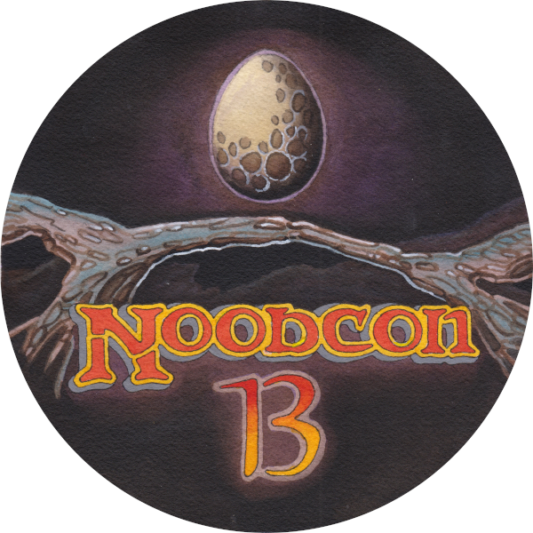
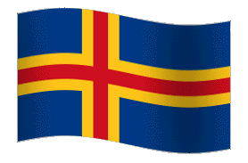
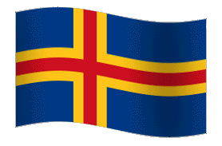

ContentsPractical infoRules Participants Side Events Live coverage FAQ |

Well screw that whole pandemic, I say. We're back, a couple of years late, to finally host the 13th annual n00bcon. A few things have changed since last. We are all older and wiser now for one. And - perhaps in particular - n00bcon is no longer the World Championship for Oldschool Magic. That Shark has swimmed (swam?) all the way down to Genoa, Italy, to be awarded during winc0n in September. So there are no qualification tournaments or things like that which we saw in older days to scramble for the invites. Instead, n00bcon is now mainly a gathering of old fools, friends, and familiar names in the community. I kinda guess it was like that before as well. The main thing now is that participation is somehow even more based on nepotism than before. If you'd like to join, the easiest way these days is to be a friendly dude with a solid track record in the community.
Even though we're scaling down a bit and the winner wont get to call themselves World Champion, I presume the tournament will still be brag-worthy. The winner will get a pack-fresh Giant Shark and all that, and at least they can call themselves n00bcon champion. So bring your A-game fools! If you still have any questions after consulting the Frequently Asked Questions (FAQ), feel free to contact the webmaster via e-mail at delaval@gmail.com.
What: The 13th annual n00bcon, the oldest recurring oldschool Magic tournament in the World. It's the place to show that you have what it used to take to be a master at Magic, but mostly to drink craft beer, look at amazing decks, and enjoy the fun side of magic tournaments.
When: Good Friday the 15th of April, starting at 13:30. Seven gruelling rounds of swiss followed by a top8. Rounds in the swiss are 55 minutes, the top8 is un-timed, but expected to be played at a reasonable pace.
Where: Rotary Pub at Richertsgatan 2, Gothenburg, Sweden.

You can check out some more info about the site at the Rotary Pub home page
Participation: Due to pandemic things and regulations at the pub (and stuff), we're trying to cap the participation at 86 players. In my attempt to do this, I have slightly messed up, and we're currently like a hundred players, so we are unfortunately a bit overbooked at this point. I guess we'll just cross that bridge when we get to it. Anyway, the players who have a spot confirmed at the tournament can be seen in the Participants section. Players with an asterix (*) next to their name have a spot if they want it but haven't been contacted yet. If you think you should have a spot and I've missed you, I blame parenthood and complicated work. Please shoot me an e-mail and we'll see what we can do.
The entry fee for the tournament is player's choice of 150 sek, 150 nok, or €15. This fee is for covering expenses at the tournament such as location, personell, additional tables/chairs, thropies, pins, and a few Easter eggs with candy I'll hide in the pub. Maybe some additional prizes as well. If you really don't feel like paying for the tournament, shoot me an email and tell me, and I'll waiver your fee. If any money are left over after the tournament, it will be used for charity or for beer to Gordon Anderson.
People who aren't participating in the tournament or work at the pub are unfortunately not allowed at the site (this is dut to things like fire code at the site). If you just want to watch some games, feature matches from the tournament will be streamed live by Wak-Wak Mtg. If you want to trade cards with someone not participating in the event, I recommend meeting up at one of the other tournaments during the weekend.
Prizes: The winner get a Giant Shark (The Dark). Top8 gets some sort of trophies. Pins and soup for everyone.

|
|
|
The main tournament will NOT be played for Ante; hence any cards that use the Ante mechanic are banned from being played.

Chaos Orb (2)
Artifact
1, Tap: Choose a nontoken permanent on the battlefield. If Chaos Orb is on the battlefield, flip Chaos Orb onto the battlefield from a height of at least one foot. If Chaos Orb turns over completely at least once during the flip, and touches the chosen permanent, destroy that permanent. Then destroy Chaos Orb.
Falling Star (2R)
Sorcery
Choose any number of non-overlapping creatures on the battlefield. Flip Falling Star from a height of at least one foot. If Falling Star turns over completely at least once during the flip, it deals 3 damage to each chosen creature it touches. Any creatures damaged by Falling Star that are not destroyed become tapped.
From the far reaches of Europe to across the Atlantic ocean, mages gather to determine who's the Master of Magic Cards.


 

|
|
|
Multiple side events will take place during the n00bcon weekend, including:
Equipment will be set up by Gordon Anderson, though that old sack of sweet potatoes will actually play this year rather than talk. Commentary will be done by the handsome Thomas "TimmyTalks" Medddens flanked by Magnus "Mg" de Laval. We hope to get Kenneth Mossberg for the top8 (as per tradition).
We play using the current comp rules, nothing added or removed. The rule enforcement level is "Don't be a douche". It is very close to REL-Competative. Notable exceptions from REL-Professional:
Artist alterations of cards in legal sets are ok as long as you can read the full name of the card and its mana cost. Just make sure that your opponent knows what cards you are playing. The three first printings of The Gathering are legal; 1st Edition "Alpha", 1st Edition "Beta", and 2nd Edition "Unlimited".
Due to popular demand, the 1994 summer printings of The Gathering 3rd Edition distributed in Ireland and Tenesse (populary known as "Summer Magic" or "Edgar") are also legal.
The decks cannot contain "proxie cards" of any sort.
For the lower-tier spenders, it is possible to get sleeping quarters at the adjacent Gothcon convention. A convention pass from Thursday to Sunday cost around 300 sek (~€30), and access to the sleeping quarters an addition 50 sek (~€5). It is not very confortable nor private, but it works.
For most vistiors, e.g. Quality Hotel Panorama is a nice enough hotel just a couple of minutes walk from the site. A few returning players have reported staying at Scandic Opalen. There are many other options if you check e.g. AirBNB, TripAdvisor or Hotels.com.
For those of you with golden pants, Upper House at Gothia Towers is simply awesome. Dorsia and Avalon are also great hotels in the high-end part of the spectrum.
And don't be afraid to ask the local players if they can help you out with a place to stay! Hospitality is a big part of the 93/94 culture!
The current plan is to make either caps or dice bags. And it is far more likely than not that there will be some other things.
Most likely, yes!